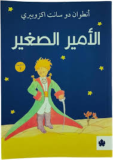
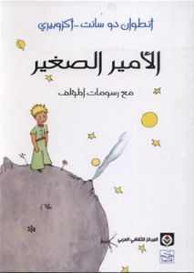
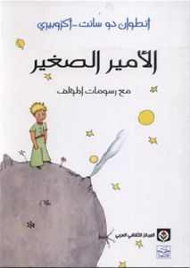
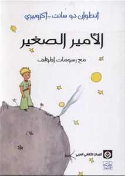

روايةالاميرالصغير🫅🏻 - أنطوان دو سانت إكزوبيري


.jpeg) 


"نبذة عن الرواية"
الراوي اسمه أنطوان دو سانت إكزوبيري (1900 - 1944)
وهو كاتب فرنسي، وكانت من المعلومات الي أنعرضت على قناة الجزيرة أنو الكاتب كان يشتغل في البريد الجوي الفرنسي وشارك في الحرب العالمية الثانية
 ما كسب فلوس من الكتاب قد ما كسب من ذي الرسمة الي رسمها
,تصنف الرواية
كواحدة من بين أفضل كتب القرن العشرين في فرنسا
وتحافظ هذه الرواية على المبيعات في جميع أنحاء العالم أكثر من مليون نسخة سنوياً، وقد ترجمت إلى أكثر من 230 لغة ولهجة وبيعت أكثر من 80 مليون نسخة في جميع أنحاء العالم، مما يجعلها واحدة من أفضل الكتب مبيعاً من الكتب المترجمة من الفرنسية.
تدور القصة في 28 فصل تتراوح بين الوسط والصغر، والصغر المتناهي, و
عن موته: تم إيجاد رفات جثته بعد ٤٤ عاماً من اختفاؤه في مهمة جوية
ما كسب فلوس من الكتاب قد ما كسب من ذي الرسمة الي رسمها
,تصنف الرواية
كواحدة من بين أفضل كتب القرن العشرين في فرنسا
وتحافظ هذه الرواية على المبيعات في جميع أنحاء العالم أكثر من مليون نسخة سنوياً، وقد ترجمت إلى أكثر من 230 لغة ولهجة وبيعت أكثر من 80 مليون نسخة في جميع أنحاء العالم، مما يجعلها واحدة من أفضل الكتب مبيعاً من الكتب المترجمة من الفرنسية.
تدور القصة في 28 فصل تتراوح بين الوسط والصغر، والصغر المتناهي, و
عن موته: تم إيجاد رفات جثته بعد ٤٤ عاماً من اختفاؤه في مهمة جوية
💬 تعليقات القراء